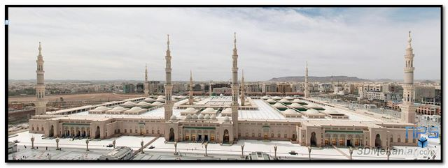

2008-11-?? : Promotion d'appartement immeuble social en tour mais sur deux niveau, nouveau plan, plus d'espace...
Le Building Ideal
-
Permet à ses usagers de réaliser ces courses à moindre coût le matin et ce à sa base afin d' éviter des voyages superflues...
-
Chaque étage doit contenir la totalité des structures permettant à une famille de s'épanouir... Avec de l'espace afin que les habitants ne ce sentent pas oppressé.
-
Un lieu de prière commun à sa base ou au sommet, permet de resserrer les liens sociaux des habitants.
-
Un magasin d'alimentation général (pruit / légume / viande
ħɛllal
حلال : poisson / volaile) au premier niveau permet de faciliter la vie des habitants...
-
Un ou plusieurs gardiens à sa base permet de sécurisé le bâtiment et de contrôler les allés et venus.
-
Un local des devoirs et une crèche permet de garder les enfants en sécurité.
-
Enfin un garage souterrain facilite la vie des habitants.

30m sur 30m, est la taille d'un étage digne de ce nom et qui permette au habitant d'être à l'aise.
Ma Maison Idéal
2009-03-21 : La maison parfaite est à l'image de l'homme et de la femme
-
Une Tête à reposer (Chambres)
-
Des yeux (Salle Video, astrolab)
-
Des oreilles (Studio)
-
Un cerveau (Bibliothèque, Médiateur, Bureau)
-
Un cœur (Salle de chauffage, salle des appareillages voltaiques et du système électrique)
-
Des poumeau (Systeme d'aeration)
-
Système digestif (Cuisine, salle à manger)
-
Systeme de filtration (Rein) et regulation thermique (Foie : Puit canadien)
-
Peau (Douche, Salle de Bain, Saunat, Bain Bulle, Panneau Solaire)
-
Système excressif (Toilette)
-
Des bras (Bricolage, stockage)
-
Des mains (Ateliers de mécanique, dessin)
-
Des jambes / Muscles (Musculations)
-
Des pieds (Garage)
| 3 |
Grenier |
- Balcon
- Véranda
- Hall,
- Buanderie / Blanchisserie,
- Coin,
- Médiateque,
- Rangement,
- Salle d'Étude / Méditation,
- Utilitaire,
- Gymnase,
- Salle de Jeux
|
| 2 |
Locaux de Nuit |
- Toilette (avec évier et autolavecul),
- Salle de bain,
- Chambre garçons,
- Chambre filles,
- Chambres parents,
- Chambres amis,
- Chambres des anciens
|
| 1 |
Locaux de Jour |
- Toilette (avec évier et autolavecul),
- Salon,
- Cuisine,
- Salle à manger,
- Bureau,
- Bibliothèque
|
| 0 |
Accueil, Hall & Commerce |
- Hall,
- Rez de chaussé commercial,
- Court
|
| -1 |
Cave |
- Bricolerie,
- Garage avec descente,
- Stockage,
- Studio
|
| -2 |
Abris Nucleaire &
Antibombardement |
|
Ainsi la maison parfaite ce doit de contenir tout type de pièce permettant de s'épanouir alors que l'appartement idéal ce doit de contenir tout les pièces nécessaires à l'épanouissement d'un être sur un ou deux niveaux.
Praetorium,
Principia (Head Quarter)


Ma Mosquée Idéal, ma Gami جامعِ, Ma Mesgid
مسجد
Une Mosquée ideal doit être Cubique ou Quadré et Contenir :
- une Minaret, une Qibla, un Mihrab & un Minbar,
- un local de sacrifice conforme au norme sanitaire E.U pouvant contenir 4 animaux,
- une grillade afin de préparer des côtelettes d'agneau,
- une cuisine,
- des chambres froides ou un local de stockage,
- Un grenier pour les provisions,
- un local de punition (fouettage),
- des hêmmamës
حمّام,
- un local d'ablution,
- un local de lavement et de pourifications des cadavres (cave),
- un local de coiffure,
- un club & un comptoir,
- un local de musculation (muslimun, musclimun),
- des chambres d'amis et pour les voyageurs (kanat),
- une terrasse,
- des toilettes de préférence éloigné de la mosquée afin d'épargner des odeurs. Il est évident que pour des raisons d'hygiène le W.C ne doivent jamais ce trouver dans le local d'ablution,
- Une ou plusieurs douches,
- Poste de l'Imam,
- Mini Magasin de Pruit פרי & legume,
- Un local d'ouranographie & astrolabe sur le toit,
- Un local Internet, Médiatheque, Bibliotheque,
- Une crèche,
- Un local d'ecole حقعليون de devoir pour les garçons et les felles.



قرآن قبران قربان
Notre mosqué Namurois Khanat
Besoin de douche, chambre d'ami (kanat), placé le WC ailleurs que dans la salle d'ablution, afin de financer notre imam, acheter la maison mitoyenne afin d'y placer des locataries, la moitié pour payé les coûts, l'autre moitié pour l'imam. Acheter la maison mitoyenne casser le mur afin d'agrandir le club, le manque de place empêche d'avoir plus de client et donc moins de bénéfice (afin d'entretenir la mosquée, tout en finançant celle-ci), de plus agrandir le local de prière qui est malheureusement trop étroit. Changé l'entrée car rentré avec des chaussures dans la salles d'ablutions ne con-vient pas.